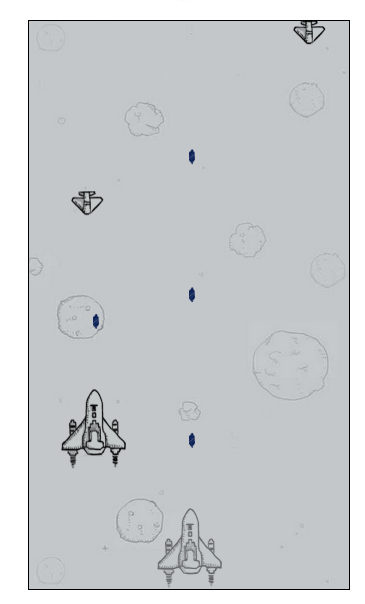
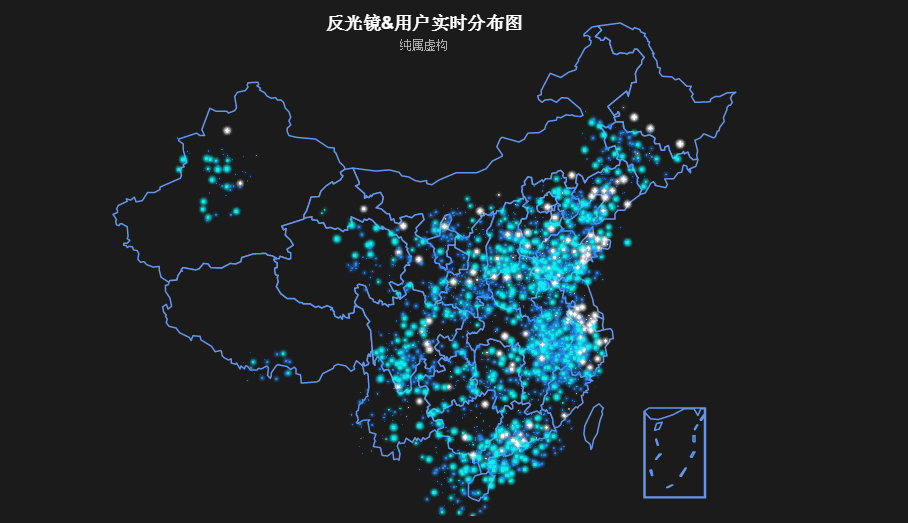
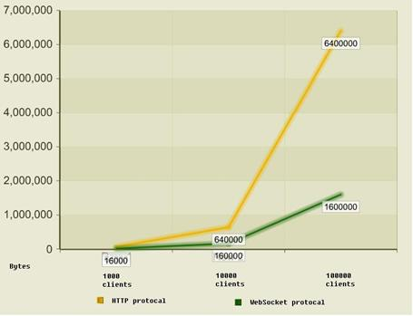

WebSokcet可以干什么？
-
多媒体聊天：聊天室、在线客服

-
在线游戏：双人打飞机、棋牌类游戏

-
数据实时监控：反观光全景视图、股票基金

- 多屏互动：活动推广（《斗战诛天》）

站在HTML5的风口

目前已经实现以下功能：
最佳体验环境：Android + Firefox(或Chrome)


http://chat.tangchanglin.com/chat.php
| 轮询 | 长连接 | Flash | WebSocket | |
|---|---|---|---|---|
| 优点： |
1.简单 |
1.无效请求较少 2.相对实时 |
1.实时 2.Push能力 3.浏览器普遍支持 |
1.轻量 2.实时 3.Push能力 4.无依赖 5.移动端普遍支持 |
| 缺点： |
1.冗余数据多 2.无效请求多 3.服务器开销大 4.不实时 5.无法主动推送 |
1.服务器开销大 2.适于单向接收数据 |
1.依赖插件 2.移动端支持较差 |
1.浏览器支持不完整 2.服务端需升级 |
| 结论： | 实时性不高，用户不多 | 实时性高，用户较少，数据交互少 | 桌面实时应用 | 实时性高，大用户量，桌面与移动 |